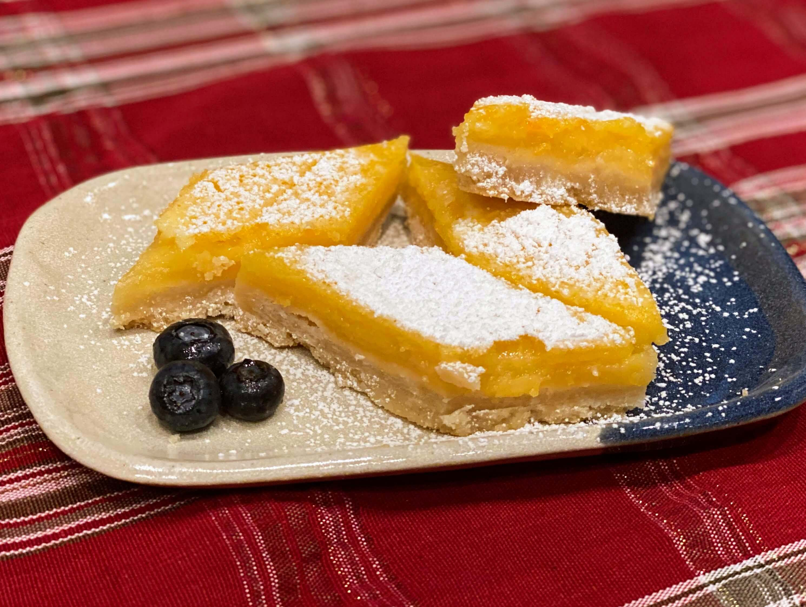

I don't know about you, but I love lemon bars. The citrusy curd combines perfectly with its buttery and flakey shortbread cookie-crust, which breaks and crumbles with each bite. This recipe is the ultimate lemon bar recipe and the perfect dessert for bringing to parties. They are classy and elegant, while also casual and something you can be proud of making. I made these a while back, and I have wanted to make them again ever since. But, for now, I will teach you how to make these Lemon Bars, so that you can learn to love them as much as I do.
Note: This recipe was created on and borrowed from another Blog, Sally's Baking Addiction.
Yields: Six Servings
- 1 Cup Unsalted Butter, Melted
- 1/2 Cup Granulated Sugar
- 2 Tsp Pure Vanilla Extract
- 1/2 Tsp Salt
- 2 Cups + 2 Tbsp All-Purpose Flour
Ingredients (Filling):
- 2 Cups Granulated Sugar
- 6 Tbsp All-Purpose Flour
- 6 Large Eggs
- 1 Cup Lemon Juice
- Powdered Sugar for Dusting (Optional)
How to Make Lemon Squares:
- Preheat the oven to 325°F (163°C). Line the bottom and sides of a 9×13 baking pan with parchment paper, leaving an overhang on the sides to lift the finished bars out (makes cutting easier!). Set aside
- Make the crust: Mix the melted butter, sugar, vanilla extract, and salt together in a medium bowl. Add the flour and stir to completely combine. The dough will be thick. Press firmly into prepared pan, making sure the layer of crust is nice and even. Bake for 20-22 minutes or until the edges are lightly browned. Remove from the oven. Using a fork, poke holes all over the top of the warm crust (not all the way through the crust). A new step I swear by, this helps the filling stick and holds the crust in place. Set aside until step 4
- Pour filling over warm crust. Bake the bars for 22-26 minutes or until the center is relatively set and no longer jiggles. (Give the pan a light tap with an oven mitt to test.) Remove bars from the oven and cool completely at room temperature. I usually cool them for about 2 hours at room temperature, then stick in the refrigerator for 1-2 more hours until pretty chilled. I recommend serving chilled
- Once cool, lift the parchment paper out of the pan using the overhang on the sides. Dust with confectioners’ sugar and cut into squares before serving. For neat squares, wipe the knife clean between each cut. Cover and store leftover lemon bars in the refrigerator for up to 1 week
|